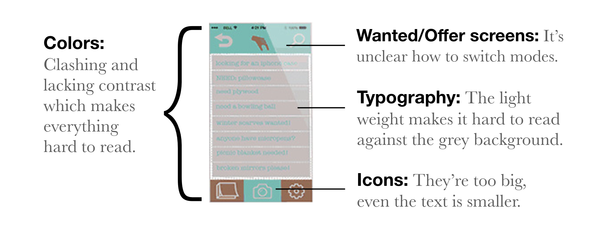

Category
ux design, user research, prototyping, redesign
Free Your Stuff Redesign
This is a redesign of a previous project, Free Your Stuff. Free Your Stuff is a gifting and sharing application where users can give away and receive things at no cost. Think of it like a free pile but it can be accessed within your fingertips! The application needs an update. The icons and colors are outdated and the application lacks ease of accessibility. In order to scrutinize the product with a better understanding of the user pain points and insights, I conducted two methods of research: Heuristic Evaluation and User Reviews Analysis.
Heuristic Evaluation
After scrutinizing Free Your Stuff, I came to the following conclusion:
Overall the UI is outdated, the experience of sharing and gifting is not enjoyable at all.
User Reviews Analysis
"On the top navigation, I am uncertain what the hand does? I am assuming that in the first two screens this is a hand taking and the last two screens are a hand giving. I like this ideology but it might be in the wrong place. I feel like if there were a logo mark, it should go where the hands are."
"The colors themselves aren't a huge issue, but the usage/pairing of them in some areas were hard to read. The teal/brown on top of each other was hard to distinguish the copy/icon used."
"I understand how a user might upload a pic of their item, but I'm not understanding the flow of any other scenario (ie. searching, filtering, obtaining something)."
"I’m confused on the bottom navigation of what the far left icon is. It looks like a book or notepad? Maybe use a different icon or use a single word with the icon to help it out."
"The color palette needs to be changed. I would not use light blue type on a grey background, nearly impossible to read. Also, I cannot tell what the pattern is on the splash screen."
"I can't decipher what the icon is in the middle between 2 icons on top. The icons could be a little bit smaller so there'll be more space for more images. I'm very visual, so I like my photos big .. maybe round the corners off of the frame a little to make it curvy?"
Based on the reviews, users find the iconography to be unclear, the color palette needs to be reconsidered. There needs to be more clarity of the application flow.
Problem Statement
Confusing iconography: Ambiguous icons might confuse the user from fully accessing the application. They might not know how to find free items or give away goods or post a wanted listing.
Lacking color contrast: Clashing colors makes it hard for the user to read the content properly. This disconnects the user from fully accessing the application.
Unfinished information architecture: The flow is missing a few pieces, it needs to be flushed out more to showcase all the possibilities the user can have within the app.
User Personas
Understanding the end users are always crucial for problem-solving. A better understanding of users could help better transform the application into a valuable product. User personas are important because they drive the design decisions. Before we proceed to the design stage, we need to remember who we are designing for.
Card Sorting
After narrowing down the features to provide on the application, I recruited 5 participants remotely to perform an open card sorting exercise through OptimalWorkshop. From the exercise, I was able to understand their thinking and behavior properly. Participants were asked to sort features into a categories.
Information Architecture
After completing the card sorting exercise, a site map was created based on the frequencies. The new application will be restructured to be more intuitive for giving and sharing.